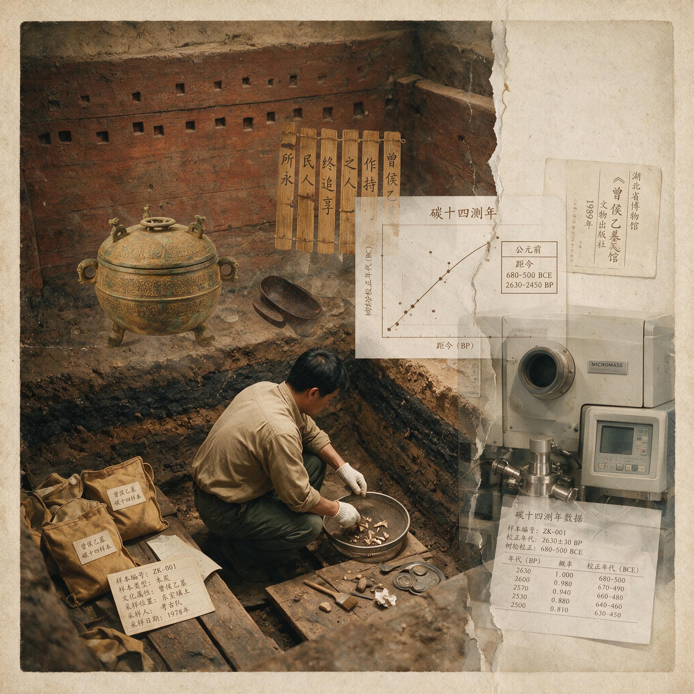

第 18 章
审美体系的裂缝
碳-14。这两个字说出来轻飘飘的，但它们在1978年夏天的实验室里，是一组沉默的数字：公元前433年，误差正负若干年。
那几块从曾侯乙墓椁室底下取出来的木炭，在加速器里走了一遭，就把一个君王最后的时刻钉在了时间的坐标上。楚惠王五十六年。或者稍晚一点。

曾侯乙墓碳十四测年样本
AI 生成插图，非史实影像。
这个“稍晚”很重要。因为楚惠王五十六年，正是那位楚国的君主给曾侯乙送镈钟的年份——那件镈钟就挂在中室编钟架子的正中间，铭文写得清清楚楚。木炭测年说“稍晚”，意味着曾侯乙死在那之后。他活着的时候接到了楚王的赗赠，他把那件镈钟挂进了自己的礼乐队列里，然后才合上眼睛。
这个时间顺序不是无关紧要的技术细节。它意味着，曾侯乙墓里那套庞大到令人窒息的器物组合，是在曾国君主明确知道自己处于楚王政治阴影之下的时刻，被一件一件选定、安置、封存的。
现在，我们把前面五章拆开来看过的那些器物，一件一件拼回去。青铜器。中室里那套九鼎八簋，纹饰铺得满——比西周任何一座诸侯墓的青铜器都要满。曾侯乙墓出土文物总数达15,404件，其中8件定为国宝，而中室出土的乐器包括编钟一架65件、编磬一架32件、鼓3件、瑟7件、笙4件、排箫2件、篪2件，构成战国初期诸侯宫廷乐队的基本制式。
蟠螭纹、蟠虺纹缠绕纠结，几乎不留空白。这种“满”是楚式的，是楚国青铜器在春秋晚期到战国早期发展出来的视觉策略：用密集的纹饰覆盖器表，制造一种压迫性的视觉冲击力。
但曾国的工匠在铺满的同时，死死咬住了一条底线——母题的选择和排列方式，仍然遵循西周礼制的等级语法。鼎的腹部，蟠螭纹绕着器物一圈，上下以凸弦纹为界，这种分段式的纹饰布局是典型的周式传统，与楚式青铜器那种不分段、一铺到底的满饰手法判然有别。曾国的青铜器在说一种奇怪的语言：楚语的语速和音量，周语的词汇和句法。
铭文。同一座墓里，同一个人名下，出现了两种截然不同的书风。编钟上的铭文——尤其是那四十五件甬钟上“曾侯乙作持”的刻款——端严方正，笔画起收有度，结构匀称，是标准的西周金文正统。但北室那些兵器上的刻款呢？戈、戟、矛的援部和胡部，工匠们随手刻上去的“曾侯乙”三个字，笔画潦草，结体随意，有些甚至刻出了界栏之外。曾侯乙墓中，45件甬钟上均有“曾侯乙乍𠱾”铭文，此外，在其余青铜礼器、用器及附件合计125件上，带有“曾侯乙”字样的铭文共出现117处。
这不是技术问题——能在编钟上刻出那么精美的铭文的工匠，不可能在兵器上刻得歪歪扭扭。这是场合问题。礼器上的铭文是给天地祖先看的，必须正；兵器上的铭文是给府库管理员看的，可以草。同一个曾侯乙，在庙堂上是一种面目，在武库里是另一种面目。
漆器。这是裂缝最大的一类。东室出土的漆木衣箱、漆案、漆几，红黑二色的强烈对比、云雷纹的繁密铺陈、扶桑树和射日图那种充满动态的叙事性画面——这些东西如果单独拿出来，放在任何一座楚国贵族墓里，都不会有人觉得违和。
曾国的漆工几乎全面倒向了楚风。他们在漆器上没有像青铜器那样做折中——没有在母题上守周、在布局上纳楚——而是直接说了楚语。为什么？因为漆器在礼制等级中的位置低于青铜器。青铜礼器是祭祀和宴饮的核心，是政治身份的直接展示面；漆器是日常用具，是陪衬。曾国的决策者显然做了一个选择：在核心展示面上尽可能维持周式正统，在次要展示面上放任楚风进入。玉器。这是另一个极端。
曾侯乙墓出了五百多件玉器，玉璧、玉琮、玉璜、玉佩，形制几乎全是西周中晚期的老样子。素面为主，纹饰极简，偶尔有谷纹或云纹，也都是西周玉器上常见的传统母题。同时期的楚国玉器在干什么？在搞透雕，在搞繁复的镂空装饰，在把玉器从礼制符号变成炫技的艺术品。曾国玉工对这些新花样视而不见，他们用一种近乎顽固的保守主义，把减法美学坚持到了战国早期。
玉器是贴身之物，是墓主身体周围的最后一道物质屏障。曾国在这个最靠近身体的器物门类上，选择了最彻底的周式正统。
丝织品。这是最微妙的一类。那些丝织品在墓室打开的时候就化成了灰，研究者只能从印痕和残片里辨认纹样。结论是：母题是老的——菱形纹、回纹、几何纹，都是西周以来丝织纹样的传统词汇；但组织结构是新的——纹样的排列方式、色彩搭配、循环节奏，已经吸收了楚地丝织的趣味。丝织品在礼制等级中处于一个模糊地带：它不是祭祀重器，但它是贵族身体的包裹物，是身份的直接标识。
曾国的策略在这里变得精细了：守住母题的血统，放开结构的时尚。五类器物，五种策略。青铜器是折中，铭文是分裂，漆器是倒向，玉器是固守，丝织品是旧瓶新酒。
现在，把目光从器物分类上移开，看空间。曾侯乙墓的椁室分成四间。中室在东，是宴饮礼仪空间，陈列着那套震惊世界的编钟、编磬、青铜礼器、漆木家具。东室在中室之东，是墓主的私人空间，曾侯乙的棺椁就放在这里，周围是玉器、漆器、丝织品、金器这些贴身之物。
同一个墓葬，同一个墓主，两个空间的审美取向居然不一致。中室——公共空间——的器物组合，在周楚之间走得小心翼翼。青铜礼器和编钟的纹饰，是那种在母题上守周、在布局上纳楚的折中路线；铭文是端严的庙堂书风；漆木家具虽然已经染上楚风，但被放置在青铜礼器的秩序框架之内，视觉上不构成独立的风格宣言。整个中室给人的感觉是：它在努力维持一种西周诸侯宫廷的正统面貌，虽然这种维持已经需要借助楚式的视觉手段来实现。中室南北长9.75米，东西宽4.75米，深3.3米，其中放置有编钟等礼乐器；东室东西长9.5米，南北宽4.75米，深3.5米，主棺南北向放置于中部偏西处，东、西两侧分别有6具、2具陪葬棺，通往中室门洞处放置1具狗棺。
东室——私人空间——的器物组合，楚风渗透的程度明显高于中室。漆器上的扶桑射日图，那是典型的楚地神话母题，与《楚辞·天问》里对后羿射日、金乌解羽的追问一脉相通。玉器虽然坚守西周减法美学，但东室的丝织品纹样结构和色彩搭配已经明显楚化。更重要的是，东室没有青铜礼器那种强烈的周式秩序框架来统摄全局，漆器、玉器、丝织品各自以自己的风格说话，整体的视觉感受比中室混杂得多。
这意味着什么？意味着曾侯乙——或者说曾国贵族阶层——在公共场合和私人场合，用的是两套不同的审美语言。在需要对外展示身份、需要向天地祖先汇报的时候，他们穿上周式的礼服，说周语，虽然口音里已经带着楚腔。在回到私人空间、面对自己的时候，他们脱下礼服，露出底下那件已经楚化的内衣。
这不是虚伪。这是困境。曾国的统治者不是不知道漆器上的楚风已经渗透到什么程度。他们亲手把那些漆器放进了墓里。他们也不是没有能力在漆器上维持周式风格——如果能在青铜器上做到母题守周，在漆器上为什么做不到？
主棺分为内外两层，外棺长3.2米，宽2.1米，高2.19米，周身以黑漆为地，绘制朱色、金黄色花纹；内棺长2.49米，宽1.27米，高1.32米，以朱漆为地，绘制黄色、黑色花纹。陪棺21具，内外黑漆，除一例外，外壁均绘有红彩。经遗骸鉴定，主棺内的墓主为45岁左右男性，陪棺内的陪葬者为13-25岁左右女性。
漆器的技术门槛并不比青铜器更高。答案是：他们选择不做。他们在漆器这个门类上放弃了抵抗，把有限的资源和精力集中到了青铜礼器、玉器这些礼制等级更高的器物上。这是一种策略性的撤退。
曾国的文化防御工事不是一道均匀的城墙。它是一道有厚有薄、有高有低的防线。在礼制等级最高、对外展示功能最强的器物上——青铜礼器、编钟、玉器——防线筑得最厚。在礼制等级较低、对内消费为主的器物上——漆器、丝织品——防线就薄了，有些地方甚至没有防线，楚风直接涌了进来。
这个策略在政治上也许是理性的。曾国是一个在楚国阴影下生存了两百年的小国，它的资源有限。它不可能在所有战线上同时抵抗楚文化的渗透。它必须做出选择：在哪里抵抗，在哪里妥协。它选择了在“面子”上抵抗，在“里子”上妥协。
但审美不是政治。审美有它自己的逻辑。当同一个墓葬的不同空间里出现了不同的审美取向，当同一个墓主的公共器物和私人器物说着不同的视觉语言，这套文化防御工事在审美层面就出现了不可弥合的裂缝。
它不是一座完整的建筑，它是一组拼合体——每一块材料都有自己的质地、自己的纹理、自己的受力方向，它们被政治需要强行拼在一起，但接缝处到处都是。
现在我们可以回答那个问题了：曾国的文化防御工事，在审美层面到底成不成立？成立。因为它确实在青铜礼器、玉器这些核心门类上守住了周式正统的基本面。公元前433年的曾国，仍然能够铸造出符合西周礼制规范的九鼎八簋，仍然能够制作出形制保守、纹饰极简的玉礼器，仍然能够在编钟上刻出端严方正的金文。在一个楚国已经称霸江汉、楚文化已经席卷南方的时代，这本身就是一种成就。
但到处都是裂缝。青铜器的纹饰已经楚化到需要仔细辨认才能区分母题和布局的程度。铭文在礼器和兵器之间分裂成两种面目。漆器几乎全面倒向楚风。丝织品的结构已经纳新。玉器虽然守住了西周正统，但它的减法美学在楚式玉器镂空透雕的加法革命面前，已经显出一种苍白的固执。更致命的是空间上的分裂。
中室和东室之间的审美落差，暴露了这套防御工事最深层的困境：它是一套“对外”的工事，不是一套“对内”的工事。曾国的贵族在公共场合维持着西周正统的面具，但在私人空间里，他们已经不自觉地接受了楚风的渗透。这种公私分裂不是某一个人的趣味问题——曾侯乙墓的营建是一个集体决策，涉及曾国的宗族、工匠、礼官，甚至可能还有楚国的赗赠使节。整个曾国贵族阶层都在这个困境里。
我们可以想象公元前433年那个时刻的曾国宫廷。曾侯乙死了。他的继承人——也许是儿子，也许是弟弟——开始主持丧事。礼官们翻开竹简上的丧礼仪注，逐项核对：九鼎八簋，备齐；编钟六十四件加楚王镈钟一件，备齐；玉璧玉琮玉佩，备齐；漆木衣箱漆案漆几，备齐。每一项都符合规制，每一项都是最好的。
但没有人问一个问题：这些东西放在一起，说的到底是不是同一种语言？青铜鼎上的蟠螭纹和漆衣箱上的扶桑树，它们来自两个不同的视觉世界。编钟铭文的端严篆书和戈戟刻款的潦草手写体，它们来自两种不同的书写传统。
玉璧的素面减法和丝织品的楚式结构，它们来自两套不同的审美逻辑。这些东西被放进同一座墓里，被同一个墓主带到地下，但它们互相之间并不对话。它们只是被摆在了一起。
这就是曾国的困境。它不是没有文化，它的文化太丰富了——丰富到了自我分裂的程度。它既想做周人，又不得不做楚人的邻居；既想守住宗周的传统，又挡不住楚风的诱惑和压力；既要在青铜器上维持礼制的庄严，又要在漆器上享受楚式的华美。
它的审美体系不是一座风格统一的大厦，而是一座到处是裂缝的拼合建筑。这座建筑能立起来，靠的不是内在的审美统一性，而是外在的政治意志。曾国的统治者用权力把不同的审美元素强行整合在一起，用礼制的框架把裂缝暂时遮盖起来。但裂缝就在那里。权力可以遮盖裂缝，但永远不能弥合裂缝。曾侯乙墓的发掘者们在打开椁室的那一刻，看到的是一个完整的、封闭了两千四百年的地下世界。编钟挂在彩绘的木架上，青铜鼎簋按秩序排列，漆木衣箱叠放在棺椁旁边，玉器散落在墓主身体周围。
一切都在原位，一切都井井有条。但这只是时间的魔术。两千四百年的封存，把裂缝冻住了。
如果我们把每一类器物单独拿出来，放回它原本的生产语境和使用场景里，裂缝就会重新裂开。青铜器回到铸造作坊里，我们会看到工匠们在周式母题和楚式满饰之间反复权衡。漆器回到髹漆工坊里，我们会看到工匠们直接从楚地学习最新的纹样和配色。玉器回到琢玉作坊里，我们会看到工匠们固执地拒绝楚式透雕的新技术，坚持用老办法磨制素面玉璧。
这些工匠可能就在同一座城市里工作，甚至可能就在同一片官营手工业作坊区里。青铜作坊在东头，漆器作坊在西头，玉器作坊在南头。东头的工匠在绞尽脑汁地让蟠螭纹看起来既满又合乎礼制，西头的工匠在毫无顾忌地复制楚式漆器的最新款式，南头的工匠在埋头磨制一百年前就已经定型的素面玉璧。他们各干各的，各有一套技术传统，各有一套审美标准。没有人来协调他们之间的风格差异，因为“协调风格”这个概念本身，在那个时代就不存在。曾国的文化防御工事不是一个人设计的。
它是一群人在不同的时间、不同的场合、面对不同的压力时，各自做出的选择的总和。曾侯乙的祖先们在西周晚期从北方迁到随枣走廊，带来了周式的礼制和审美。曾侯乙的祖父们在春秋中期开始面对楚国的军事和文化压力，开始在某些器物门类上做出调整。曾侯乙的父亲们在春秋晚期到战国早期，把这种调整变成了一套不成文的规矩：青铜器守住底线，漆器放开，玉器死守，丝织品折中。
到了曾侯乙这一代，这套规矩已经运行了至少三代人。它已经变成了一种惯性，一种不需要思考的默认设置。礼官们在为曾侯乙准备丧葬器物的时候，不会去追问青铜器为什么要这么做、漆器为什么要那么做，他们只是按照惯例去安排。惯例本身就是答案。
但惯例掩盖不了裂缝。恰恰相反，惯例本身就是裂缝的产物。正是因为曾国的审美体系无法在所有的器物门类上统一起来，才需要惯例来规定哪些门类该怎么做。惯例是一套应对分裂的权宜之计，它不是弥合分裂的方案，它是承认分裂之后的妥协。现在我们站在公元前433年那个时间点上，看这座墓。
木炭测年告诉我们，曾侯乙死在楚惠王送镈钟之后不久。那件镈钟就挂在中室编钟架子的正中间，位置比曾侯乙自己铸造的甬钟更显眼。楚惠王为什么送这件镈钟？
铭文上写的是“奠之于西阳”——西阳是曾国的都城。楚王把一个楚式镈钟“奠”在曾国的宗庙里，这本身就是一个政治姿态：你是我的诸侯，你的宗庙里有我的礼器。曾侯乙收下了。
他不但收下了，还把这件镈钟挂进了自己葬礼的编钟队列里。他没有把它藏起来，没有把它熔化重铸，而是让它堂堂正正地出现在中室最显眼的位置。这个决定不简单。
它意味着曾侯乙——或者他的继承人——承认了楚王的政治权威，同时又把这种承认转化成了曾国礼乐体系的一部分。楚王的镈钟被编进了曾国的编钟队列，它的音律必须和其余六十四件甬钟协调，它的位置必须符合曾国乐悬的排列规则。曾国用乐律的秩序消化了政治的压力。
这是曾国的生存智慧。它不硬抗，它吸收。楚国的军事压力、文化渗透、政治干预，曾国都吸收了。
它把楚式满饰吸收进周式纹饰的语法里，把楚式漆器吸收进日常生活的器具里，把楚王的镈钟吸收进自己的编钟队列里。它用吸收来化解压力，用包容来维持独立。
但吸收是有代价的。每吸收一样东西，自身的体系就多一道裂缝。漆器吸收了楚风，漆器和青铜器之间就有了裂缝。丝织品吸收了楚式结构，丝织品和玉器之间就有了裂缝。楚王的镈钟被吸收进编钟，编钟的礼制纯洁性就有了裂缝——那套编钟不再是纯粹的“曾侯乙作持”，它现在包含了楚王的政治意志。
曾侯乙墓的器物组合，就是两百年吸收史的最后结晶。它完整地呈现了曾国在文化夹缝中生存的全部智慧，也完整地呈现了这种生存的全部代价。智慧是：它活下来了，它的宗庙没有断，它的纪年没有断，它的礼乐没有断。代价是：它的审美体系裂了，它的文化身份模糊了，它的贵族阶层在公共场合和私人空间里用的是两套不同的视觉语言。
公元前433年稍晚，曾侯乙下葬。那座墓被封上，椁室周围铺上木炭，墓道填上夯土。
两千年后，那些木炭被取出来做碳-14测年，给出了一个精确的时间锚点。但那个锚点锁住的，不只是曾侯乙的死亡时间。它锁住的，是曾国作为一个独立政治实体，最后一次完整地表达“我们是谁”的那个瞬间。
那个瞬间的表达，充满了口音混杂的焦虑。青铜器说的是周语掺楚音，漆器说的是楚语，玉器说的是古周语，丝织品说的是周语套楚腔。这座墓就是曾国文化身份的最后一次完整发声。
而这次发声里，没有一种统一的语言。这不是曾侯乙的错，也不是曾国工匠的错。这是两百年地缘政治压力在文化审美层面留下的必然痕迹。
一个小国在大国的阴影下求生存，它必须在文化上做出选择。选择守，就会僵化；选择变，就会稀释；选择折中，就会分裂。
曾国选择了折中，所以它分裂了。曾侯乙墓的发掘，让这场分裂在两千四百年后重新暴露在阳光下。考古学家们一件一件地取出那些器物，编号、拍照、绘图、描述。
他们注意到青铜器的纹饰“繁密而有序”，注意到漆器的风格“与楚器无异”，注意到玉器的形制“保守”，注意到铭文的书风“不一致”。这些观察分散在发掘报告的不同章节里，各自独立，互不关联。
但如果把它们拼在一起看，一个完整的图景就浮现出来了。那不是一堆死物的集合，那是一个活生生的文化困境的物质遗存。每一件器物都在说话，但它们说的不是同一种语言。
青铜器在说：我是周人。漆器在说：我喜欢楚风。玉器在说：我守古制。铭文在说：我分场合。丝织品在说：我母题是老的，结构是新的。这些声音混在一起，就是公元前433年曾国的真实处境。
它不是一个文化统一的国度，它是一个文化分裂的国度。它的贵族阶层在公共场合扮演周式诸侯，在私人生活里享受楚式趣味。它的工匠们在不同的器物门类上执行不同的审美标准。它的礼官们用惯例来管理分裂，用程序来遮盖裂缝。曾侯乙墓就是这道裂缝的物质形态。
它把裂缝冻住了两千年，让我们在今天还能看见它最初的样子——不是弥合后的样子，就是裂缝本身的样子。而这道裂缝之所以重要，不只是因为它解释了曾国的文化困境。
它解释了一个更大的问题：文化身份从来不是一块完整的石头。它是一堆碎片的拼合，拼合的方式取决于权力、压力、资源和时间。曾国在楚文化压力下拼合出了一套文化防御工事，这套工事在政治上有效——曾国确实活到了战国中期，比很多同等规模的小国活得都久——但在审美上，它到处都是裂缝。
那些裂缝不是缺陷。它们是证据。它们证明，文化身份的建构从来不是一件干净、整齐、逻辑自洽的事情。它是一件在压力下仓促完成的拼合工作，用的是手边能拿到的材料，遵循的是惯性而不是设计，留下的是裂缝而不是统一。
曾侯乙墓的椁室封上之后，曾国的历史还在继续。考古材料告诉我们，曾国至少延续到了战国中期。曾侯乙之后还有曾侯丙，曾侯丙之后可能还有别的曾侯。
但曾侯乙墓那种规模的器物组合，那种试图在所有器物门类上同时表达文化身份的雄心，再也没有出现过。
因为裂缝已经太大了。到了曾侯乙的下一代，楚文化的渗透已经不只是漆器和丝织品的问题了。它开始进入青铜礼器的核心领域，开始影响铭文的书风，开始改变玉器的形制。曾国的文化防御工事在曾侯乙这一代表现出了最完整也最分裂的面貌，然后就开始瓦解。
不是突然崩塌，是一块一块地瓦解。先是漆器防线彻底失守，然后是丝织品，然后是青铜器纹饰，最后连玉器也开始出现楚式透雕。这个过程用了多少年，我们不知道。考古材料没有给出精确的时间线。
但结果很清楚：到了战国中期晚段，曾国墓葬里出土的器物，已经和楚国墓葬没有显著区别了。曾国的文化防御工事，最终没有守住。
但在公元前433年那个时刻，它还在。它还完整地陈列在曾侯乙的椁室里，每一类器物都在自己的位置上，用自己的方式说话。那些声音混在一起，嘈杂、矛盾、分裂，但它们毕竟还在发声。
那是曾国作为一个独立文化实体，最后一次用自己的口音——不管这口音有多混杂——向天地祖先汇报。汇报结束，墓室封上，木炭铺好，夯土夯实。曾侯乙墓沉入地下，带着它所有的裂缝。
那些裂缝被封存了两千四百年。直到1978年，擂鼓墩的爆破声把它们重新震开。考古队员打开椁室，看到的是一个完整的、静止的世界。
但他们很快就发现，这个世界的完整只是表象。编钟的音律精确得令人窒息，但挂钟的横梁已经在重压下弯曲变形。青铜鼎簋按秩序排列，但鼎上的纹饰和簋上的纹饰遵循着不同的视觉逻辑。漆木衣箱上的扶桑树画得生机勃勃，但它旁边的玉璧素净得像一块磨光的石头。一切都在原位，但一切都不协调。
考古队员们当时顾不上想这些。他们要清理、编号、拍照、加固、搬运。一万五千多件文物，每一件都要记录在案。他们忙了几个月，才把中室的器物全部取出。
然后是东室，然后是北室，然后是西室。每一间椁室都是一套独立的器物组合，每一套组合都有自己的审美逻辑。但四套组合之间，没有统一的审美逻辑。
曾侯乙墓椁室分为北、东、中、西四室，西室南北长8.65米，东西宽3.25米，深3.3米，放置13具陪棺；北室南北长4.25米，东西宽4.25米，深3.15米，放置兵器、车马器与简册等。
这个发现不是考古队员在发掘现场做出的。它是在后来的研究中逐渐浮现的。青铜器专家注意到纹饰的折中策略，古文字学家注意到铭文的书风分裂，漆器专家注意到楚风渗透的程度，玉器专家注意到减法美学的顽固坚持，丝织品专家注意到母题和结构的分离。每个领域的专家都在自己的材料里看到了裂缝。但把这些裂缝拼在一起，看出它们指向同一个结论，那是更晚的事情。
这个结论就是：曾侯乙墓不是一座风格统一的墓葬。它是一座风格分裂的墓葬。它的分裂不是偶然的技术失误，不是个别工匠的趣味偏差，而是一套文化防御策略在审美层面必然导致的后果。曾国用分裂换取了生存，用裂缝换取了时间。
这个交易在政治上是划算的，但在审美上，它留下了一座永远无法弥合的纪念碑。这座纪念碑现在就陈列在湖北省博物馆里。编钟挂在复原的钟架上，青铜鼎簋摆在展柜里，漆木衣箱放在恒温恒湿的玻璃罩里，玉器排列在丝绒衬底上。每一件都是国宝，每一件都精美绝伦。
但它们之间的裂缝，在博物馆的灯光下反而比在地下墓室里更清晰。因为博物馆把不同门类的器物分开展示——青铜器在一个展厅，漆器在另一个展厅，玉器在第三个展厅——这种分类陈列本身就是对裂缝的承认。它们无法被放在同一个空间里，因为它们的风格不兼容。参观者从青铜器展厅走到漆器展厅，会感到一种视觉上的断裂。
青铜器上那种在周楚之间小心权衡的紧张感消失了，取而代之的是漆器上那种毫无顾忌的楚式张扬。从漆器展厅走到玉器展厅，断裂再次发生——楚式的华美突然被西周式的素净取代。这些断裂不是博物馆的策展失误，它们忠实再现了曾侯乙墓内部的审美分裂。
曾国的统治者不可能预见到这一点。他们在公元前433年营建那座墓的时候，想的是如何让曾侯乙在死后继续享有诸侯的礼遇，如何向天地祖先展示曾国的正统性，如何在楚国的政治阴影下维持最后的文化尊严。他们不可能想到两千四百年后会有一个叫博物馆的机构，会把他们的器物分门别类地展示，会让裂缝暴露在日光灯下。
但他们留下的裂缝，比他们想留下的任何东西都更有说服力。那些裂缝告诉我们，文化防御工事从来不是一道完美的墙。它是一道在压力下仓促修筑的壁垒，用的是手边能拿到的材料，遵循的是惯性而不是设计，留下的是裂缝而不是统一。曾国的工匠们尽了最大的努力，但他们的努力只能延缓楚风的渗透，不能阻止它。他们的努力只能遮盖裂缝，不能弥合它。
曾侯乙墓的椁室封上之后，裂缝就在黑暗中静静地存在着。木炭吸干了椁室里的水分，夯土隔绝了地面的空气，编钟停止了振动，漆器的颜色在黑暗中慢慢变深。两千年里，没有人知道那些裂缝的存在。曾国的历史被秦的统一战争碾碎，随枣走廊的地名在历代行政区划中变来变去，曾国的宗庙在某个不可考的时间点上被废弃或者被改建。
曾侯乙的名字从传世文献中彻底消失，就好像这个国家从来没有存在过一样。但墓还在。裂缝还在。
它们在擂鼓墩的地下等了两千年，等一群工兵用炸药炸开了山包，等考古队员用铲子挖开了封土，等实验室的加速器给木炭做了碳-14测年，等各个领域的专家在器物上辨认出了那些不一致、不协调、不统一的痕迹。那些痕迹最终拼出了一个答案：曾国的文化防御工事，在审美层面，成立，但到处都是裂缝。